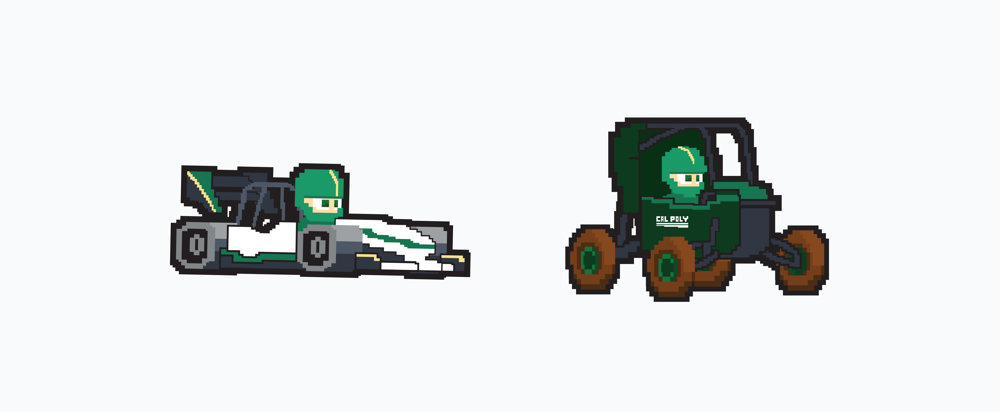
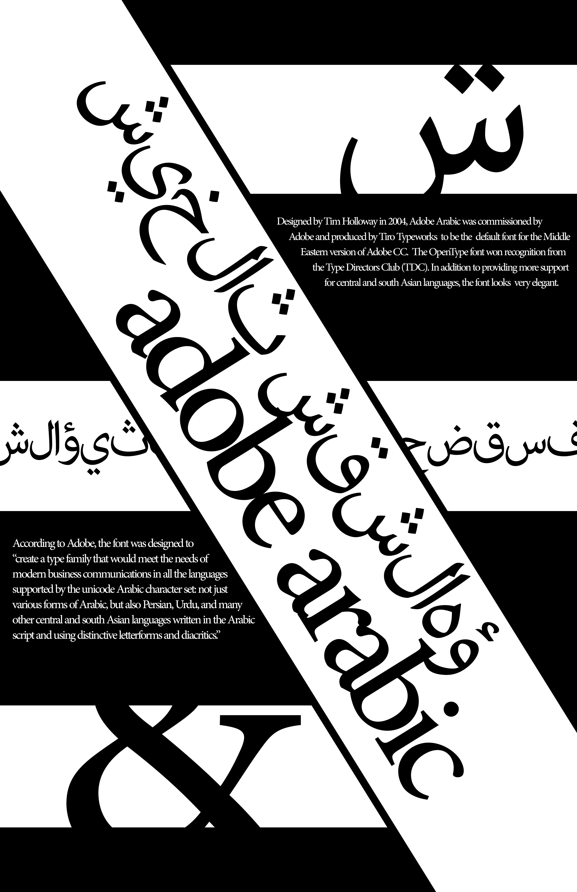
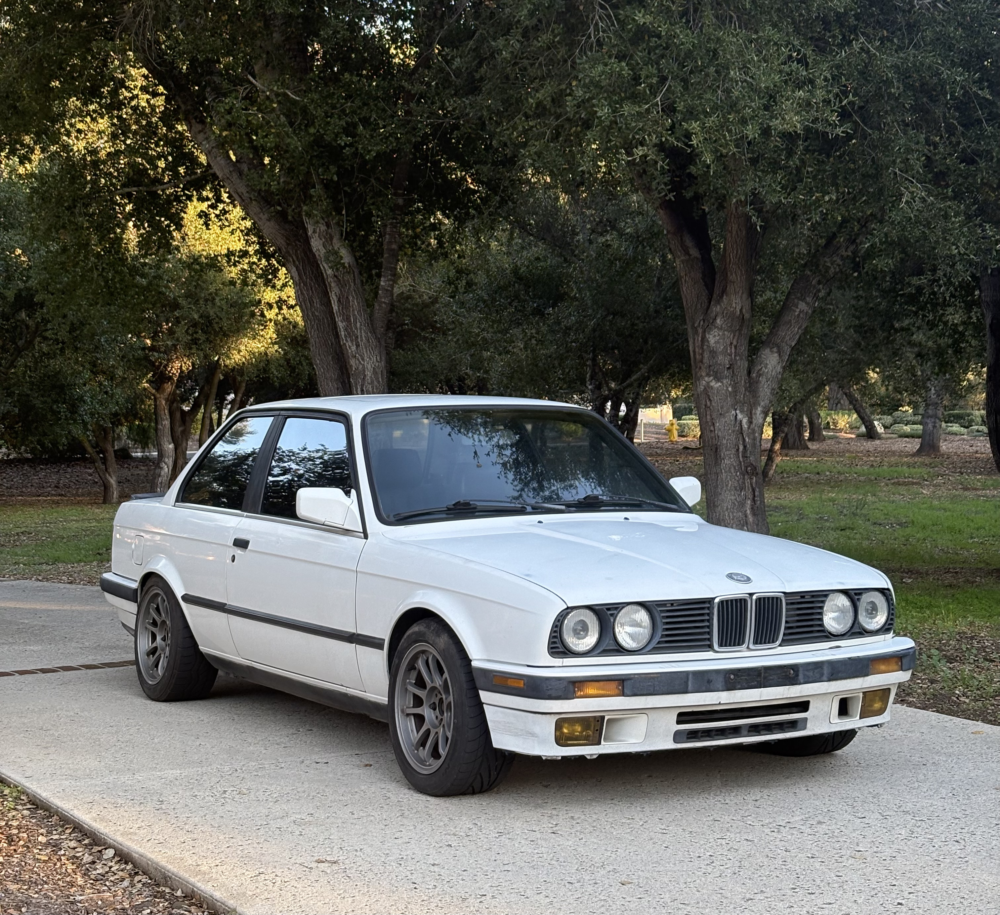

Side Quests
Some non-UX projects that I'm proud of.





Cal Poly Racing — FSAE Livery
For the 2024-2025 season, I planned, designed, and executed the livery for our Formula racecar.
This was my first foray into vinyl wrap design, and proved to be a challenging and exciting iterative process. With the help of several graphic designers, I was able to consolidate different approaches to the livery into a flowing, modern design.
Grassroots Magazine
Like any designer, I've always had an idea for a magazine.
At some point, I'd love to start formally interviewing the car enthusiasts I meet at events and ask them about their cars, the culture, etc. In the meantime, I created some concept cover art for the series using Adobe Photoshop and Illustrator.
I wanted to capture the nostalgic feeling many have for car culture while keeping things new-age, as the articles would mostly focus on current events in the car world.
Pixel Art
As part of a merch series for Cal Poly Racing, I created some pixelized racers.
Both were created in Adobe Illustrator, and represent the organization's Baja SAE and Formula SAE teams. Making pixel art can be tedious, but it was satisfying to see them on our shirts at the end.
Font Posters
I made a couple of these font posters for a class in community college.
They were actually pretty fun to make, and I enjoyed learning about the font I chose and thinking of striking ways I could represent it.
CPR Logo Animation
Wanting to practice my After Effects skills, I created this logo animation for Cal Poly Racing
Motion graphics have always been a cool area of design that I haven't explored as much as I'd like to. Whenever I get the chance, small projects like these help to familiarize the medium.
My blog
I write down my thoughts about car stuff here.